El cuerpo como aparato.
Las manos como programa.
Instalación interactiva en tiempo real desarrollada en TouchDesigner con hand tracking vía MediaPipe. El participante usa sus manos para definir un rectángulo en el espacio frente a la cámara: la distancia y posición de los dedos índice determinan el tamaño y ubicación del marco. Dentro de él, la imagen se transforma mediante efectos visuales intercambiables. Fuera, la realidad permanece sin intervención.
El proyecto propone al cuerpo como el dispositivo que enmarca, filtra y transforma la realidad visible. El participante se convierte en el operador de un sistema que altera la percepción de lo que está frente a él, y al mismo tiempo es el sujeto que experimenta la transformación.
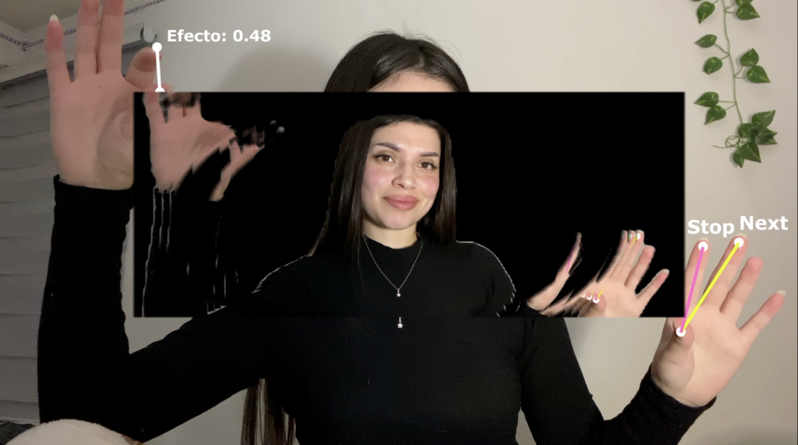
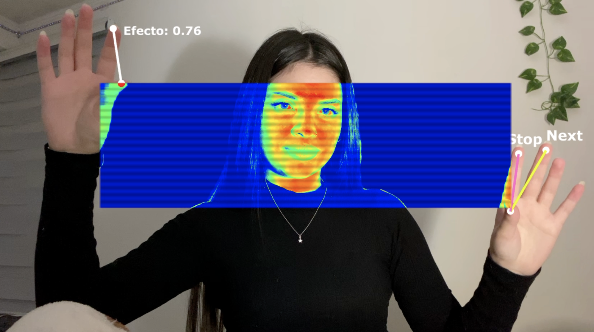
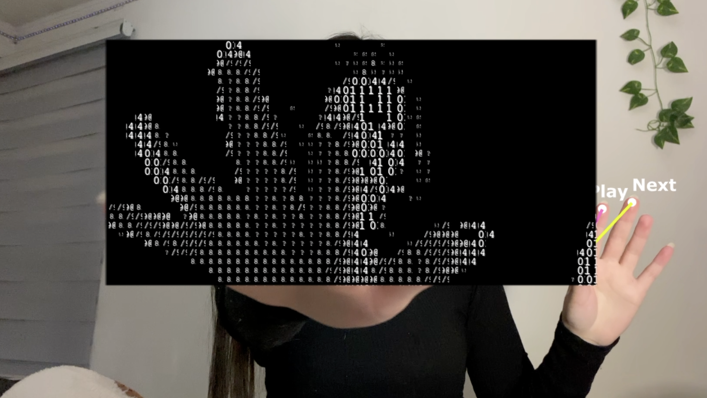
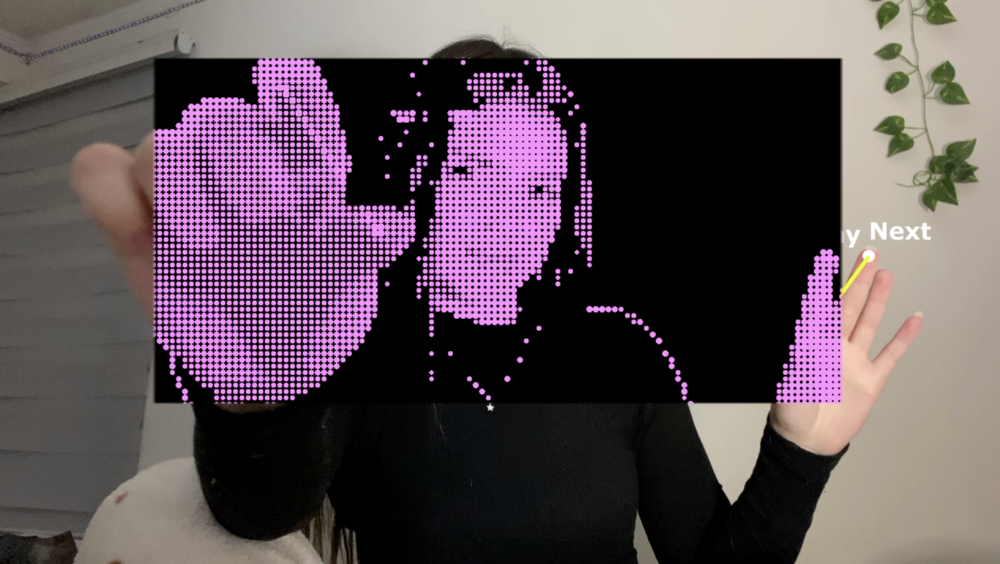
Umbral fue presentado en el PCD Santiago 2026, organizado por LID UDP. Durante el evento el proyecto estuvo disponible para que cualquier persona interactuara con él.
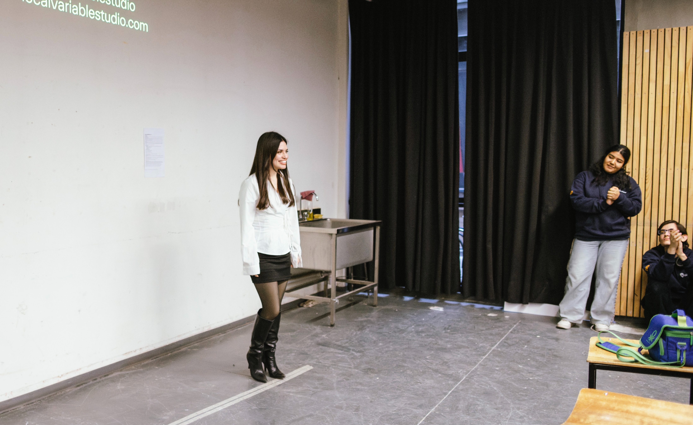
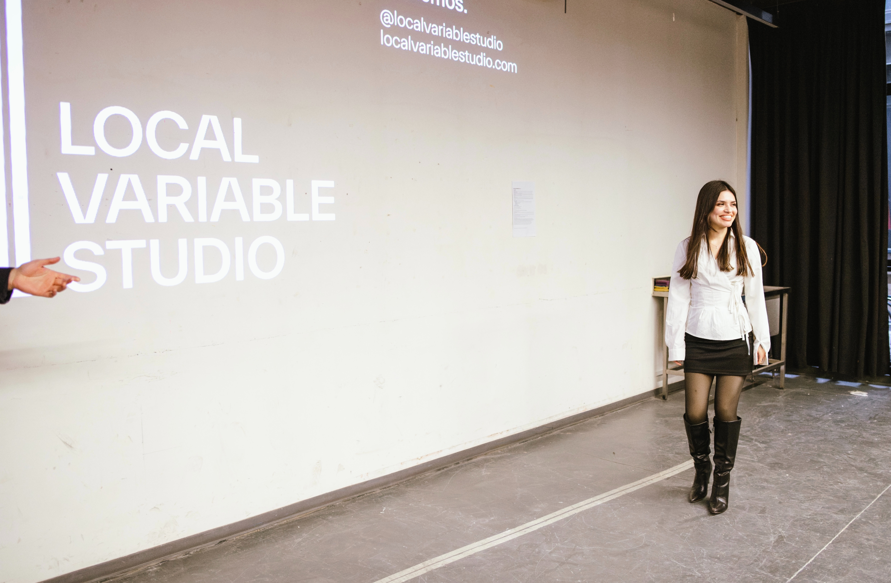
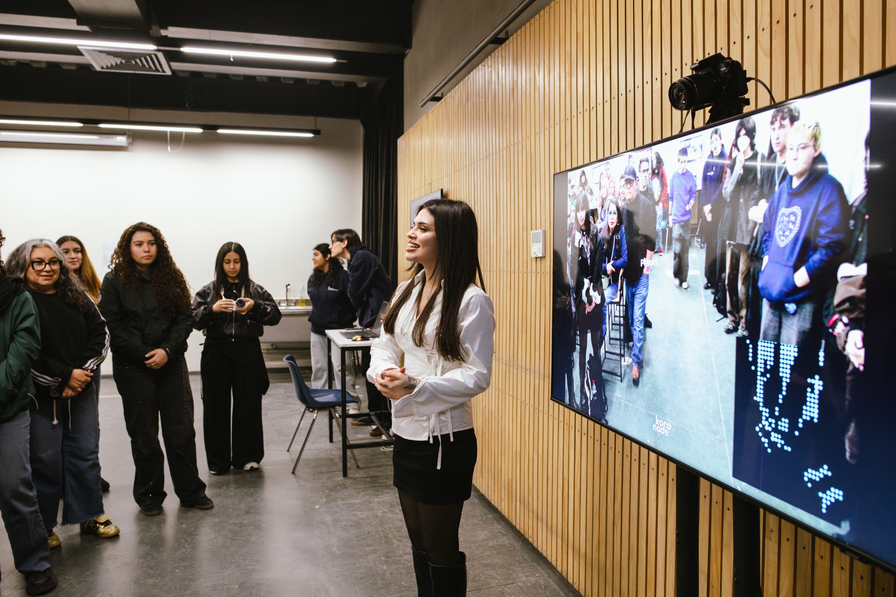
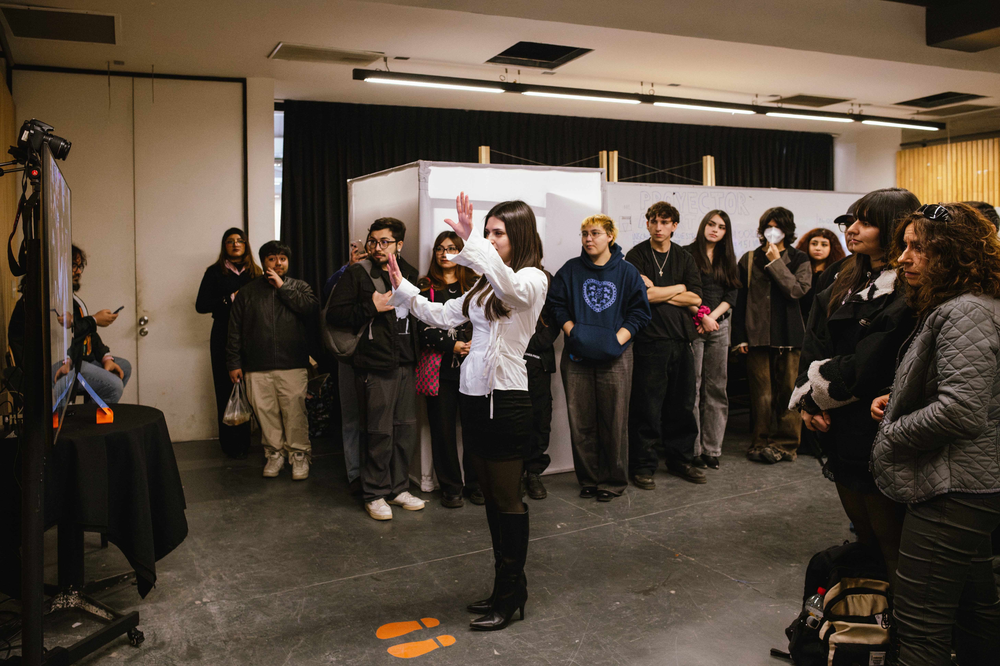
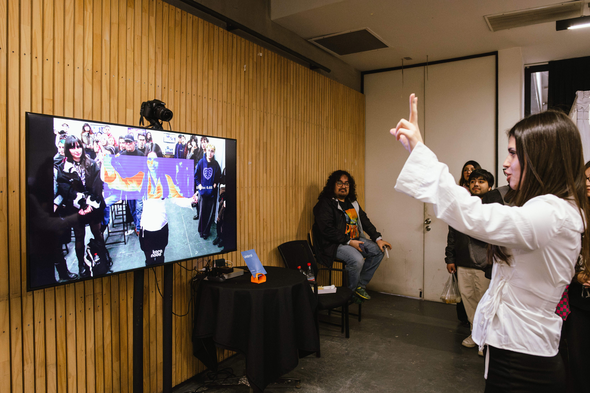
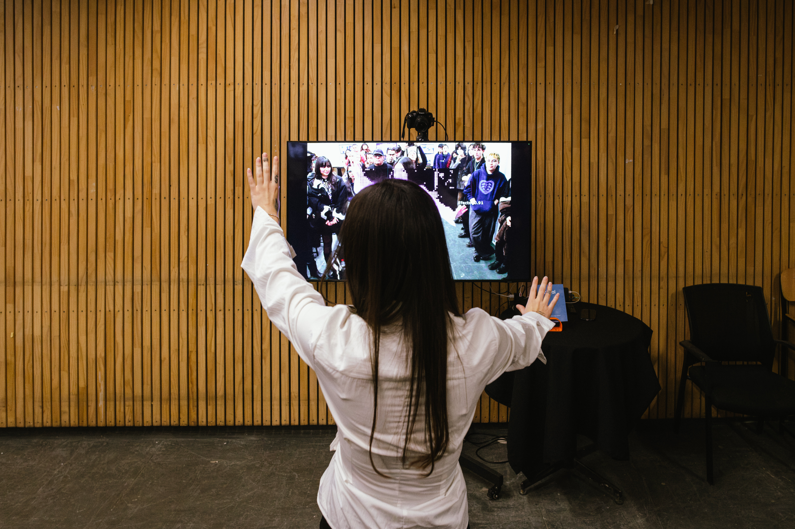
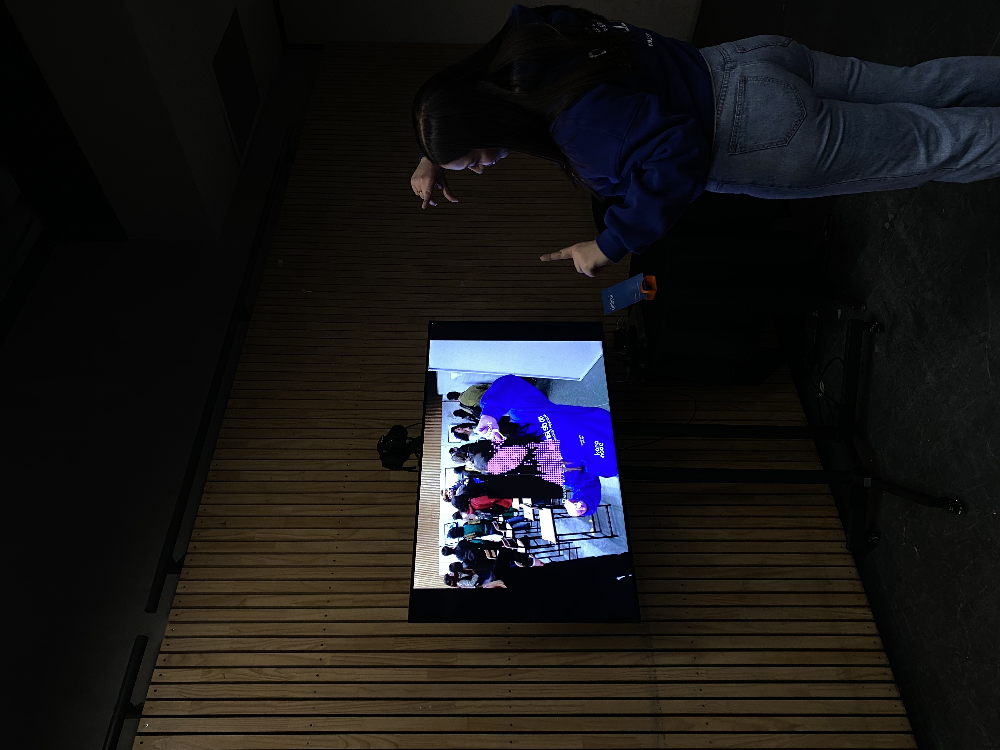